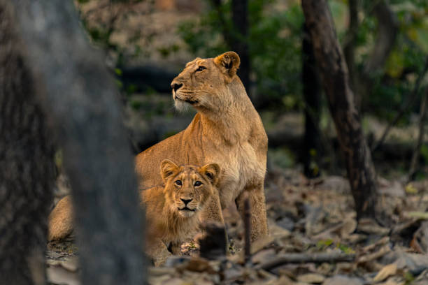
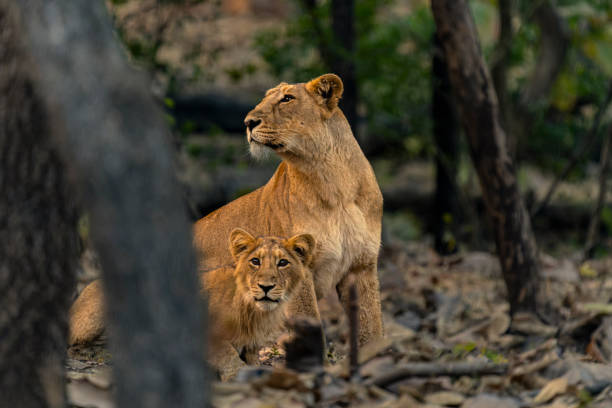

Wildlife in Gir National Park Forest
The land of the Asiatic lion is the ideal reserve for the tremendous varieties of wild creatures to
roam freely and safely. To make a royal journey towards the grand rugged hills of Sasan Gir, the
wildlife lovers can get a fabulous opportunity to witness around 2,375 distinct fauna species of Gir
to include around 38 species of mammals, 300 species of birds, 37 species of reptiles and more than
2,000 species of insects.
The group of the carnivores in Gir is truly comprised of the presence of Asiatic lions, Indian Leopards,
Indian Cobras, Sloth bears, Jungle cats, Golden Jackals, Indian Palm Civets, Striped Hyenas,
Indian Mongoose and Ratels. Desert cats and Rusty-spotted cats exist but can be rarely seen.
The main herbivores genres of the residents of Gir are Chital, Nilgai (or Blue bull), Antelope,
Sambar, Four-horned Chinkara and Wild boar. Blackbucks from the surrounding area can be occasionally
identified in the sanctuary.
The group of smaller mammals will also include Porcupine and Hare where Pangolin is rare in
Gir sanctuary. The reptiles are represented by the Marsh crocodile hir Tortoise and the Monitor
Lizard in the water areas of the sanctuary. Snakes and Pythons too can be found in the lush bushes
and along the streams. Being adopted under the Indian Crocodile Conservation Project in 1977,
the Gujarat State Forest Department has used the reserve area where the area is also flourished
with more than 300 species of birds. The scavenger group of birds has 6 recorded species of Vultures.
Some of the typical species of Gir include Crested Serpent Eagle, Brown Fish Owl, Crested Hawk-eagle,
endangered Bonelli's Eagle, Rock Bush-Quail, Indian Eagle-Owl, Black-headed Oriole, Pygmy Woodpecker,
Crested Treeswift and Indian Pitta.


 
